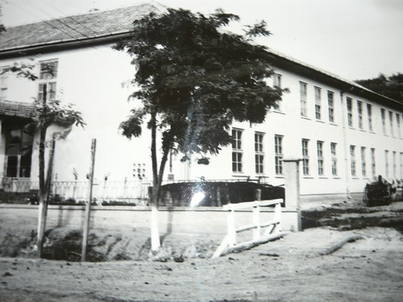
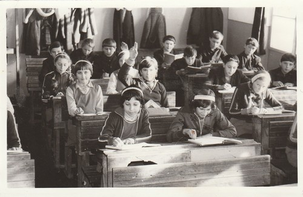
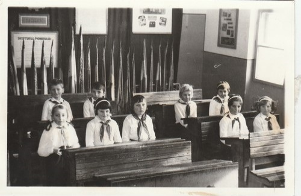

Începuturile învățământului din Camăr. În secolele al XVII-lea, al XVIII-lea și al XIX-lea, învățământul din Camăr a avut un caracter confesional reformat. Clădirea școlii era amplasată în apropierea bisericii reformate. Prima școală elementară din sat funcționa cu un învățător, numit rector, și cu un ajutor, numit perceptor, desemnați de colegiul din Debrețin.
Dezvoltarea localității și a școlii. În timpul recensământului populației din vremea împăratului Iosif al II-lea a fost înregistrată o creștere importantă a numărului locuitorilor. În secolul al XIX-lea, dezvoltarea localității a fost însoțită de construirea școlii și a bisericii. La început funcționau separat clase pentru fete și clase pentru băieți, aflate în subordinea bisericii reformate.
Organizarea administrativă. Plasa Camăr aparținea Comitatului Crasna și era alcătuită din șaisprezece sate, până la reorganizarea administrativă și teritorială din anii 1848–1849. Începând din anul 1876, comuna Camăr a devenit parte a județului Sălaj.
Înființarea învățământului de stat. În anul 1897 a fost înființat învățământul popular de stat. Reforma învățământului din anul 1948 a dus la apariția Școlii Generale de șapte clase. În perioada următoare, învățământul obligatoriu și gratuit a fost organizat mai întâi în șapte clase, iar apoi în opt clase.
Extinderea școlii. Începând cu anul școlar 1964–1965, în Camăr a funcționat Școala Generală de opt ani. Din anul școlar 1969–1970, instituția a devenit școală cu clasele I–X, oferind elevilor din clasele a IX-a și a X-a și o pregătire profesională.
Construirea clădirii principale. Între anii 1962 și 1964 a fost construită clădirea principală actuală a școlii. Aceasta cuprindea nouă săli de clasă, o parte dintre ele fiind organizate ulterior ca laboratoare și cabinete școlare.
Perioada de după 1989. După anul 1989, școala din Camăr a urmat procesul de reformare și modernizare a învățământului românesc. Instituția și-a câștigat un prestigiu binemeritat prin rezultatele elevilor și prin deschiderea permanentă către metode și idei noi.
Rolul școlii în comunitate. Oferta educațională a școlii urmărește să răspundă nevoilor copiilor și ale comunității locale, adaptându-se schimbărilor și cerințelor sistemului de învățământ.
Momente importante
Imagini din istoria școlii


